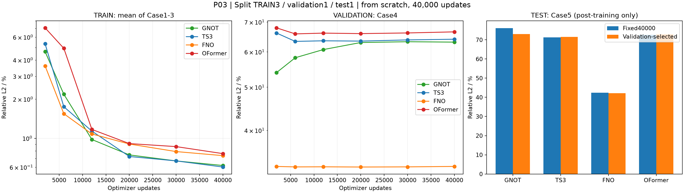
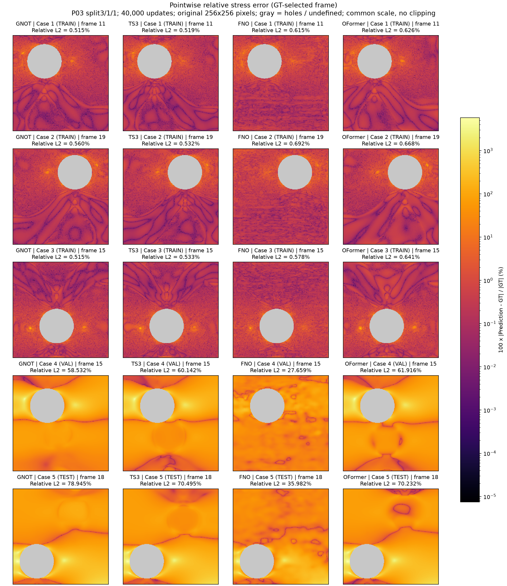
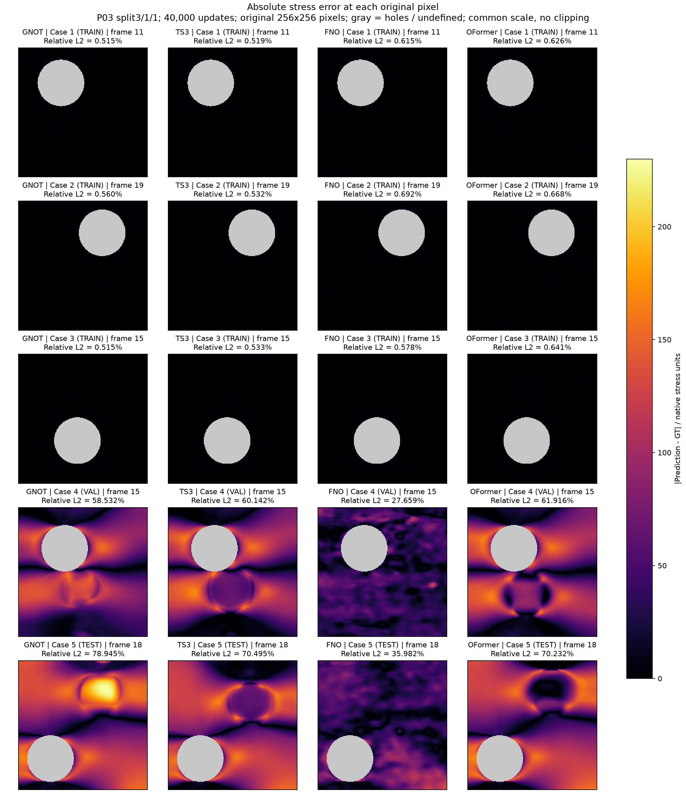
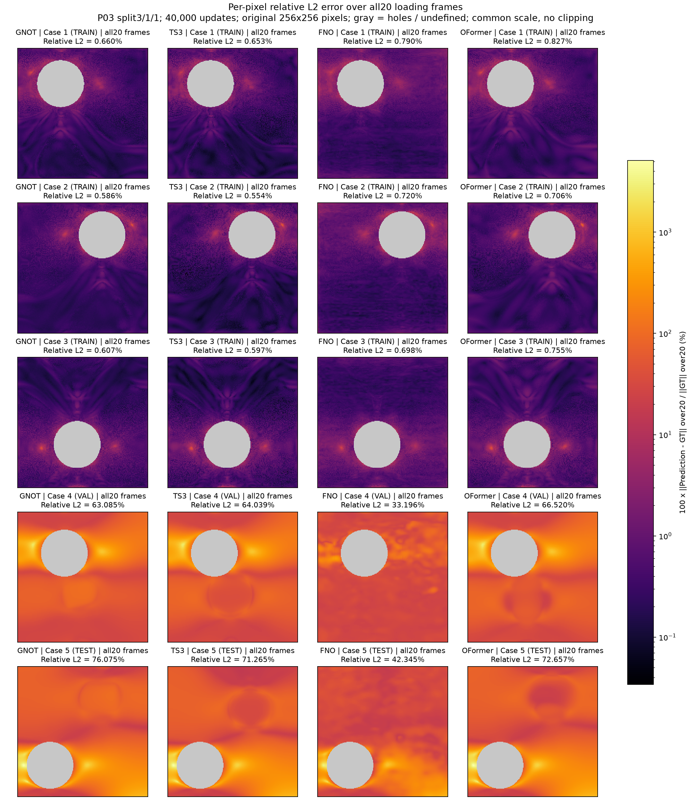
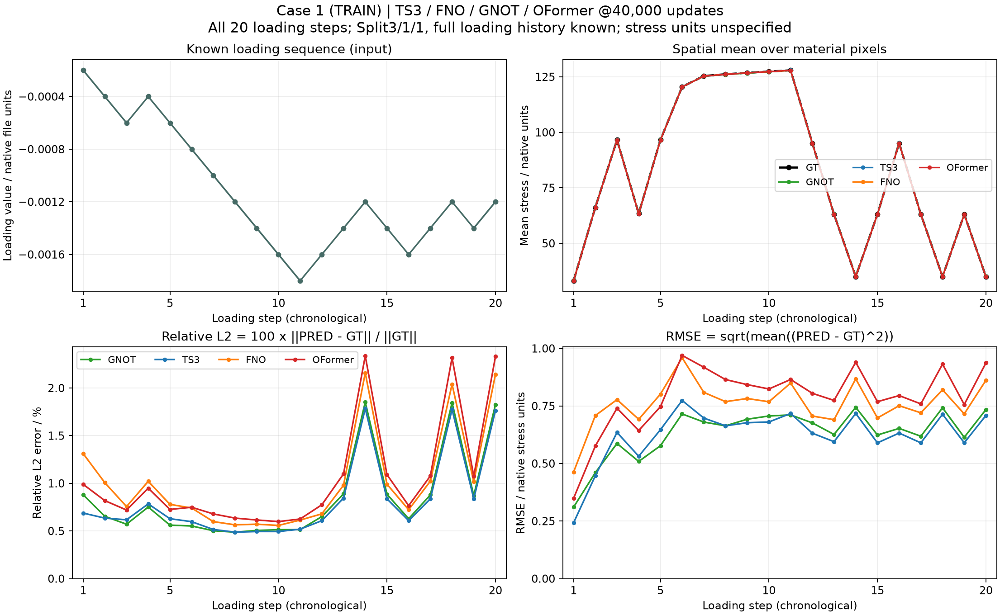
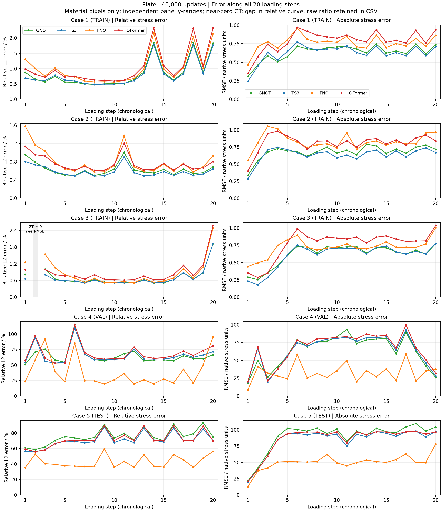

P03 / HELD-OUT CASE GENERALIZATION
板件 · 3 / 1 / 1 泛化测试
四模型各40,000步，从纯初值训练完成Case1–3 TRAIN；Case4 validation；Case5 test。完整20步加载历史作为输入。只有1个validation和1个test样本，结果仅描述这次固定划分。
固定40,000步 · 相同更新预算
误差为材料像素、全部20帧应力的Relative L2（%）；TRAIN对前三例等权平均，validation和test各一例。点击表头排序。
| 模型 | 参数量 | TRAIN mean (%) | Validation (%) | Test (%) |
|---|---|---|---|---|
| GNOT | 980,964 | 0.6178 | 63.0852 | 76.0745 |
| TS3 | 976,756 | 0.6015 | 64.0390 | 71.2651 |
| FNO | 1,023,833 | 0.7361 | 33.1959 | 42.3455 |
| OFormer | 989,740 | 0.7625 | 66.5196 | 72.6574 |

与P02保持相同约百万参数架构、原始256²输入、40,000次单case更新及学习率策略；P03只循环前三例，每个训练case约13,333次展示。P02见过全部5例，不能把P02的Case4/5拟合误差当泛化对照。
仅按Validation选优 · 与固定40,000步分开
在预先固定的2000/6000/12000/20000/30000/40000步中，选择Case4完整20帧Relative L2最低者；训练仍跑满40,000步，无早停、无test调参。模型选择冻结后才计算Case5的test指标。
| 模型 | Val-best update | Val-best validation (%) | Val-best test (%) |
|---|---|---|---|
| GNOT | 2000 | 53.8921 | 72.9631 |
| TS3 | 6000 | 63.3230 | 71.4783 |
| FNO | 20000 | 33.0939 | 42.1000 |
| OFormer | 6000 | 65.8251 | 72.8691 |
训练时间与GPU排队
准入等待 6.43 分钟；worker启动 16.58 秒；共享数据设置内部记录 0.31 秒（参考值）；队列总墙钟 206.32 分钟。GPU连续三次、间隔30秒利用率≤10%且全局锁可用才启动。
| 模型 | 训练过程UTC / min | 最终评估与输出UTC / s | 模型阶段UTC / min |
|---|---|---|---|
| GNOT | 87.476 | 3.203 | 87.530 |
| TS3 | 53.982 | 2.124 | 54.018 |
| FNO | 8.165 | 1.741 | 8.194 |
| OFormer | 49.647 | 2.519 | 49.689 |
正式耗时取文件UTC边界：preflight完成至40000步loss落盘为训练过程（含周期validation和保存，不含初始构造/preflight）；之后至summary落盘为最终评估与输出。模型阶段为两段之和。内部perf_counter累计值与UTC间隔出现约7–8%偏差，原始训练/评估/保存细分及CUDA事件值保留在JSON供诊断，未按比例修正，不能作为正式分项或受控吞吐证据。
逐Case · GT / Prediction / 两种误差
正在读取原始数据…
Prediction
Pointwise relative error (%)
Absolute error
移动指针或点击原始像素查看数值。
每格为原始数据点；无平滑或插值，孔洞为灰色。GT与预测共用色标。Relative L2（%）=100×‖PRED−GT‖₂/‖GT‖₂；逐点相对误差=100×|PRED−GT|/|GT|，GT=0时未定义。绝对误差=|PRED−GT|，单位沿用原文件。模型菜单中fixed40000与val-best为不同检查点。
静态误差图 · 固定40,000步
逐点相对误差
打开完整图
逐点绝对误差
打开完整图
全部20帧综合相对误差
打开完整图
无泄漏划分与适用范围
归一化仅用Case1–3：应力RMS=106.52667，载荷缩放=0.0018。训练损失、梯度和优化更新只包含前三例。Case4不进入梯度，仅在固定里程碑监测和选优；Case5仅在训练完成且选择冻结后评估。
24维输入：归一化XY、Z=0、geometry、完整20步加载历史；输出20帧应力。全加载历史已知，测试的是未见case/几何与加载路径条件下的映射，不是未来载荷的因果预测。没有新增数据或FE求解，不能用1个test样本推断普遍泛化性能。
完整参数、划分、时间与数据SHA JSON · 汇总CSV各Case加载过程 · 固定40,000步
Case1–3 TRAIN；Case4 validation；Case5 test。相对误差的近零GT步留空，原始比值与绝对误差完整保留。

五个Case合并总览 · TRAIN / Validation / Test分列标注
左为Relative L2（%），右为绝对RMSE；各面板完整纵轴范围。相对曲线对近零GT（该case最大帧范数的10⁻¹⁰以下）留空，只有Case3第2步；原始比值仍保留于CSV。
打开合并矢量图